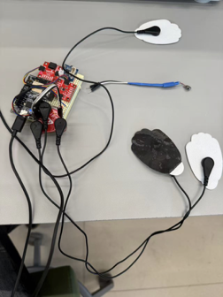
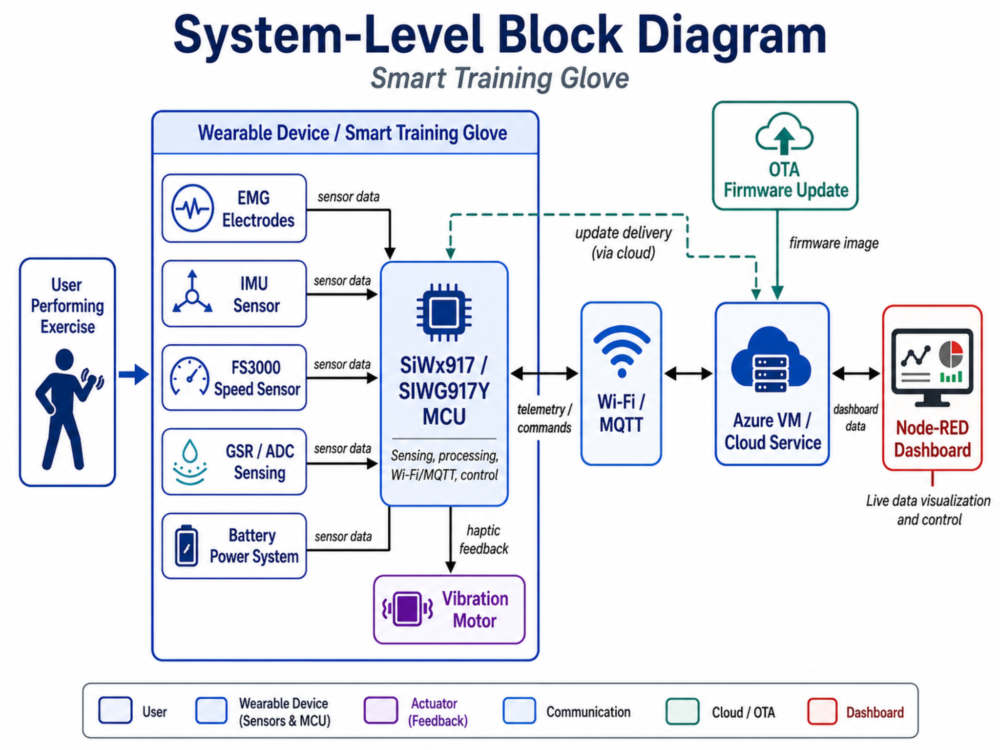
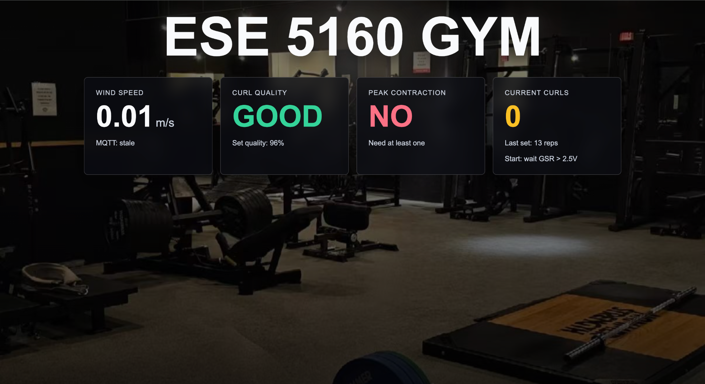
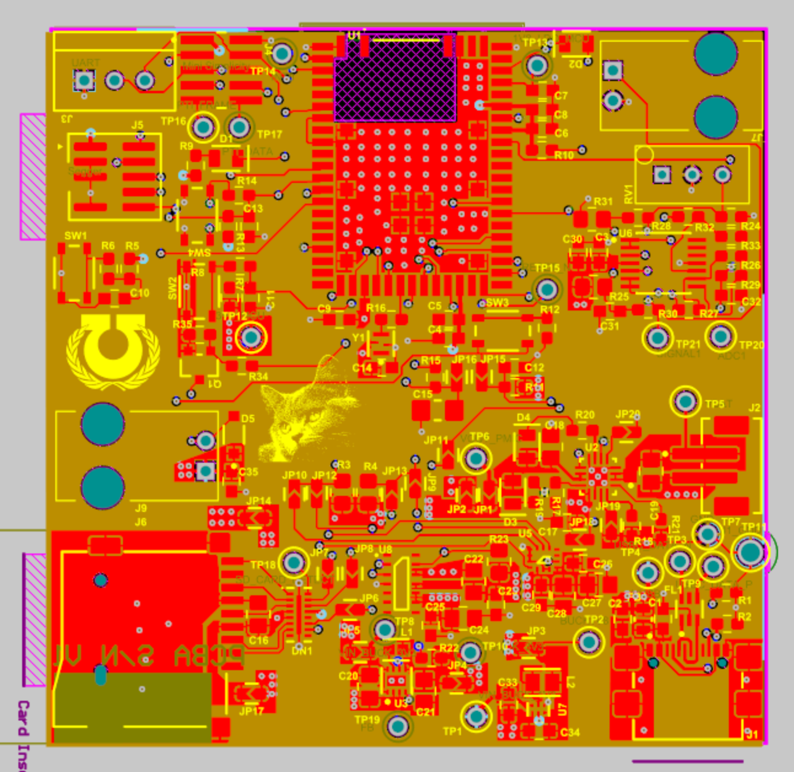
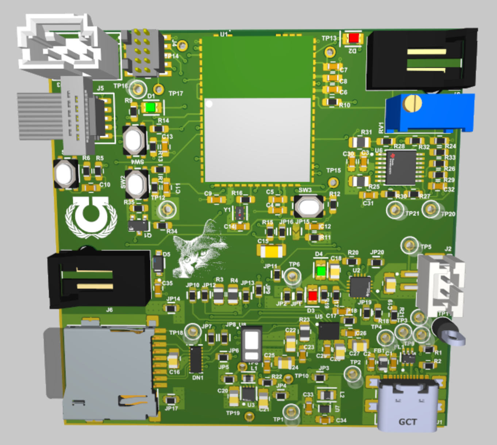
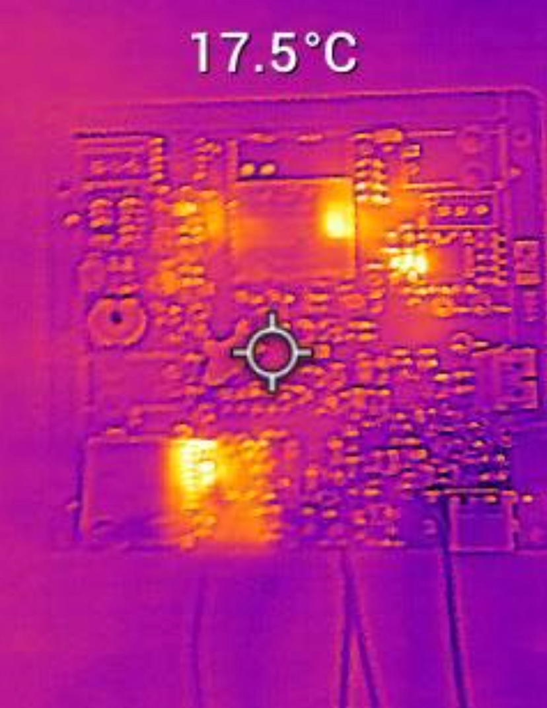
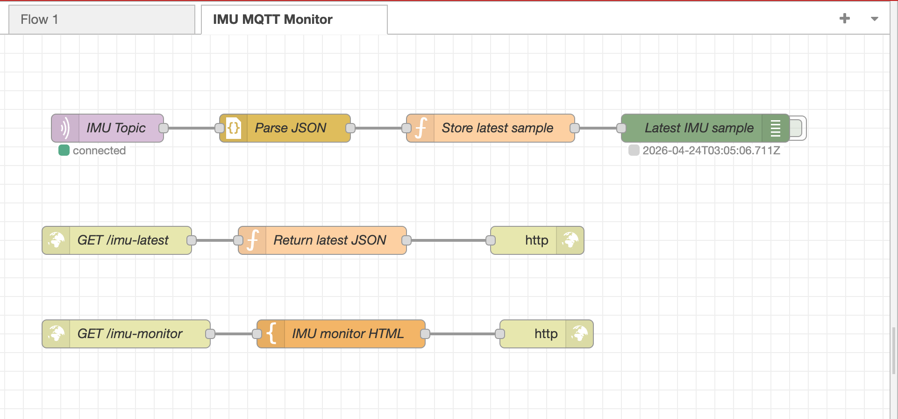

01
Problem
Many people perform repetitive strength-training movements with poor form, especially when tired or relying on momentum.
An Internet-connected wearable coaching prototype that monitors strength-training quality using motion, muscle-activation, speed, and physiological sensing, then provides haptic feedback when the user’s form needs correction.

Built as a wearable fitness coaching system for strength-training feedback and cloud-connected monitoring.
Many people perform repetitive strength-training movements with poor form, especially when tired or relying on momentum.
The glove acts as a wearable coach by sensing exercise quality and giving immediate vibration feedback during training.
Wi‑Fi/MQTT publishes live status to a Node‑RED dashboard hosted on an Azure VM for remote visualization and control.
The embedded platform collects sensor data, processes workout state, sends telemetry, and controls haptic feedback.

EMG electrodes detect muscle activation, the IMU measures hand motion, FS3000 supports speed/momentum feedback, and GSR/ADC adds physiological context.
The SiWx917 / SIWG917Y platform runs firmware for sensing, workout-state logic, Wi‑Fi/MQTT communication, and vibration motor control.
The Azure VM and Node‑RED dashboard display live device data and provide an interface for monitoring and device interaction.
Key takeaways from hardware bring-up, integration, and cloud-connected prototyping.
The main challenge was bringing up the custom PCBA and integrating sensing, actuator control, Wi‑Fi/MQTT, Node‑RED communication, and OTA update behavior into one stable prototype. Debugging required checking power, reset behavior, SWD signals, oscillator operation, provisioning state, and firmware flow.
A successful IoT prototype is a complete system, not just a PCB or a firmware program. Staged validation, serial logs, simple test firmware, dashboard feedback, and modular design made it easier to isolate hardware, firmware, networking, and cloud issues.
Final validation summary based on prototype tests, dashboard behavior, firmware integration, and board bring-up.
| ID | Hardware Requirement | Validation | Status |
|---|---|---|---|
| HRS‑01 | Use SiWx917 / SIWG917Y as the main embedded controller. | Visual inspection, firmware testing, and board bring-up. | Partial |
| HRS‑02 | Support portable battery-powered operation. | Power architecture and battery input review. | Met |
| HRS‑03 | Provide a stable 3.3 V rail. | Measured around 3.2–3.3 V during testing. | Met |
| HRS‑04 | Include 1.8 V support for low-voltage components. | Verified schematic/layout regulator design. | Met |
| HRS‑05 | Support Wi‑Fi communication. | Confirmed communication with Azure VM and Node‑RED. | Met |
| HRS‑06 | Include IMU, EMG, FS3000, GSR/ADC, and vibration feedback. | Subsystem checks and final prototype demonstration. | Met |
| HRS‑07 | Integrate electronics into a wearable glove prototype. | Final physical prototype inspection and demonstration. | Met |
| ID | Software Requirement | Validation | Status |
|---|---|---|---|
| SRS‑01 | Initialize peripherals after boot. | Checked firmware initialization and CLI/debug output. | Met |
| SRS‑02 | Connect to Wi‑Fi and cloud MQTT service. | Observed serial output, MQTT messages, and dashboard behavior. | Met |
| SRS‑03 | Publish telemetry and workout status. | Checked live MQTT data and Node‑RED dashboard display. | Met |
| SRS‑04 | Receive cloud commands from Node‑RED. | Sent dashboard controls and observed device response. | Met |
| SRS‑05 | Use sensor data for motion, effort, and speed feedback. | Tested IMU, EMG, FS3000, and GSR/ADC behavior. | Met |
| SRS‑06 | Control vibration motor feedback. | Triggered motor output from firmware or Node‑RED. | Met |
| SRS‑07 | Support OTA firmware update workflow. | Hosted firmware on the server and tested OTA update flow. | Met |
Final prototype photos, PCBA views, Altium design screenshots, thermal image, and Node‑RED interface.







Improvements needed to turn the prototype into a more reliable wearable training system.
Improve EMG, IMU, FS3000, and GSR/ADC calibration for more accurate feedback.
Make the glove cleaner, easier to wear, and more robust for repeated training tests.
Add historical workout data storage, better dashboard UI, and more reliable status tracking.
Source code is not duplicated in this GitHub Pages site. The final firmware and Node‑RED flow are linked below.